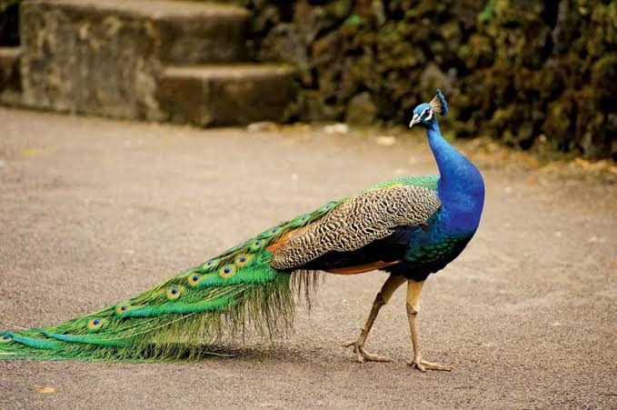

Peacock
Bird
SCIENTIFIC NAME Pavo cristatus
FAMILY NAME Phasianidae
ENDANGERED STATUS LEAST CONCERN
CLASSIFICATION Bird
LIFE SPAN 20 years
DIET Omnivore
Peacock, any of three species of resplendent birds of the pheasant family, Phasianidae (order Galliformes). Strictly, the male is a peacock, and the female is a peahen; both are peafowl.
The two most-recognizable species of peafowl are the blue, or Indian, peacock (Pavo cristatus), of India and Sri Lanka, and the green, or Javanese, peacock (P. muticus), found from Myanmar (Burma) to Java.
The Congo peacock (Afropavo congensis), which inhabits the forested interior of the Democratic Republic of the Congo, was discovered in 1936 after a search that began in 1913 with the finding of a single feather.
In both species of Pavo, the male has a 90–130-cm (35–50-inch) body and 150-cm (60-inch) train of tail feathers that are coloured a brilliant metallic green. This train is mainly formed of the bird’s upper tail coverts, which are enormously elongated.
Each feather is tipped with an iridescent eyespot that is ringed with blue and bronze. In courtship displays, the cock elevates his tail, which lies under the train, thus elevating the train and bringing it forward. At the climax of this display, the tail feathers are vibrated, giving the feathers of the train a shimmering appearance and making a rustling sound.
The blue peacock’s body feathers are mostly metallic blue-green. The green peacock, with a train much like that of the blue, has green and bronze body feathers. Hens of both species are green and brown and are almost as big as the male but lack the train and the head ornament.
In the wild, both species live in open lowland forests, flocking by day and roosting high in trees at night. During the breeding season, the male forms a harem of two to five hens, each of which lays four to eight whitish eggs in a depression in the ground.
The eggs are incubated by the peahen until they hatch some 28 days later. The chicks have all of their feathers when they emerge from their eggs and are capable of flight roughly one week after hatching. Most blue and green peafowl become sexually mature at age three.
However, some male blue peafowl have been known to breed as early as age two.
As an ornamental bird, the peacock is a staple resident of many of the world’s zoos and has long been famous throughout the Old World.
Green peacocks in captivity must be kept apart from other fowl, though, because of their aggressive disposition. Blue peacocks, though native to warm humid climates, can survive northern winters. Green peacocks, however, cannot tolerate much cold.
The Congo peacock is the only large phasianid in Africa. The cock is mainly blue and green with a short rounded tail. The hen is reddish and green with a brown topknot. The species is smaller than those in genus Pavo, growing to roughly between 64 and 70 cm (25 to 28 inches) in length by adulthood.
Biology of Peacock
Distribution and habitat
The Indian peafowl is a resident breeder across the Indian subcontinent and inhabits the drier lowland areas of Sri Lanka. In the Indian subcontinent, it is found mainly below an elevation of 1,800 m (1.1 mi) and in rare cases seen at about 2,000 m (1.2 mi).
It is found in moist and dry-deciduous forests, but can adapt to live in cultivated regions and around human habitations and is usually found where water is available. In many parts of northern India, they are protected by religious practices and will forage around villages and towns for scraps.
Some have suggested that the peacock was introduced into Europe by Alexander the Great, while others say the bird had reached Athens by 450 BCE and may have been introduced even earlier. It has since been introduced in many other parts of the world and has become feral in some areas.
Besides its native habitat, the bird has been introduced by humans to the United States, Mexico, Honduras, Colombia, Guyana, Suriname, Brazil, Uruguay, Argentina, South Africa, Portugal, Madagascar, Mauritius, Réunion, Indonesia, Papua New Guinea,
Australia, Croatia (Split, island of Lokrum), and elsewhere. In isolated cases, the Indian peafowl has been known to be able to adapt to harsher climates, such as those of northern Canada.
Behaviour and ecology
Peafowl are best known for the male's extravagant display feathers which, despite actually growing from their back, are thought of as a tail. The "train" is in reality made up of the enormously elongated upper tail coverts.
The tail itself is brown and short as in the peahen. The colours result not from any green or blue pigments but from the micro-structure of the feathers and the resulting optical phenomena.
The long train feathers (and tarsal spurs) of the male develop only after the second year of life. Fully developed trains are found in birds older than four years. In northern India, these begin to develop each February and are moulted at the end of August. The moult of the flight feathers may be spread out across the year.
Peafowl forage on the ground in small groups, known as musters, that usually have a cock and 3 to 5 hens. After the breeding season, the flocks tend to be made up only of females and young.
They are found in the open early in the mornings and tend to stay in cover during the heat of the day. They are fond of dust-bathing and at dusk, groups walk in single file to a favourite waterhole to drink. When disturbed, they usually escape by running and rarely take to flight.
Sexual selection
The colours of the peacock and the contrast with the much duller peahen were a puzzle to early thinkers. Charles Darwin wrote to Asa Gray that the "sight of a feather in a peacock's tail, whenever I gaze at it, makes me sick!" as he failed to see an adaptive advantage for the extravagant tail which seemed only to be an encumbrance.
Darwin developed a second principle of sexual selection to resolve the problem, though in the prevailing intellectual trends of Victorian Britain, the theory failed to gain widespread attention.
The American artist Abbott Handerson Thayer tried to show, from his own imagination, the value of the eyespots as disruptive camouflage in a 1907 painting.
He used the painting in his 1909 book Concealing-Coloration in the Animal Kingdom, denying the possibility of sexual selection and arguing that essentially all forms of animal colouration had evolved as camouflage.
He was roundly criticised in a lengthy paper by Theodore Roosevelt, who wrote that Thayer had only managed to paint the peacock's plumage as camouflage by sleight of hand, "with the blue sky showing through the leaves in just sufficient quantity here and there to warrant the author-artists explaining that the wonderful blue hues of the peacock's neck are obliterative because they make it fade into the sky."
Breeding
Peacocks are polygamous, and the breeding season is spread out but appears to be dependent on the rains. Peafowls usually reach sexual maturity at the age of 2 to 3 years old. Several males may congregate at a lek site and these males are often closely related.
Males at lek appear to maintain small territories next to each other and they allow females to visit them and make no attempt to guard harems. Females do not appear to favour specific males.
The males display in courtship by raising the upper-tail coverts into an arched fan. The wings are held half open and drooped and it periodically vibrates the long feathers producing a ruffling sound. The cock faces the hen initially and struts and prances around and sometimes turns around to display the tail. Males may also freeze over food to invite a female in a form of courtship feeding.
Males may display even in the absence of females. When a male is displaying, females do not appear to show any interest and usually continue their foraging.
Feeding
Peafowl are omnivorous and eat seeds, insects, fruits, small mammals and reptiles. They feed on small snakes but keep their distance from larger ones.
In the Gir forest of Gujarat, a large percentage of their food is made up of the fallen berries of Zizyphus. Around cultivated areas, peafowl feed on a wide range of crops such as groundnut, tomato, paddy, chili and even bananas.
Around human habitations, they feed on a variety of food scraps and even human excreta. In the countryside, it is particularly partial to crops and garden plants.
Conservation and status
Indian peafowl are widely distributed in the wild across South Asia and protected both culturally in many areas and by law in India. Conservative estimates of the population put them at more than 100,000.
Illegal poaching for meat, however, continues and declines have been noted in parts of India. Peafowl breed readily in captivity and as free-ranging ornamental fowl. Zoos, parks, bird-fanciers and dealers across the world maintain breeding populations that do not need to be augmented by the capture of wild birds.
Poaching of peacocks for their meat and feathers and accidental poisoning by feeding on pesticide treated seeds are known threats to wild birds. Methods to identify if feathers have been plucked or have been shed naturally have been developed as Indian law allows only the collection of feathers that have been shed.